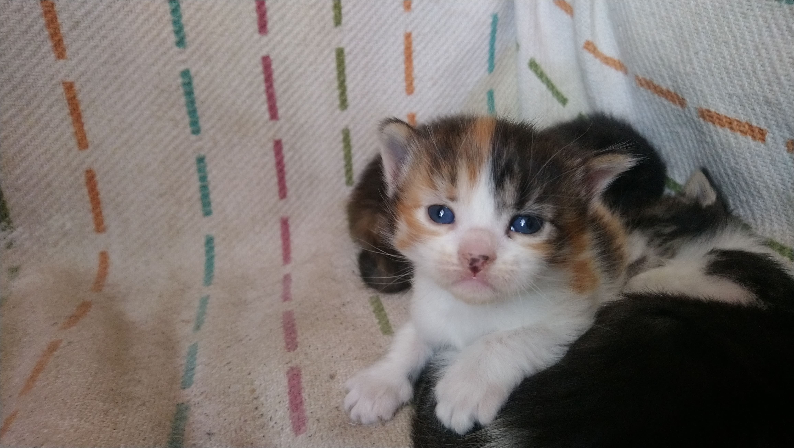
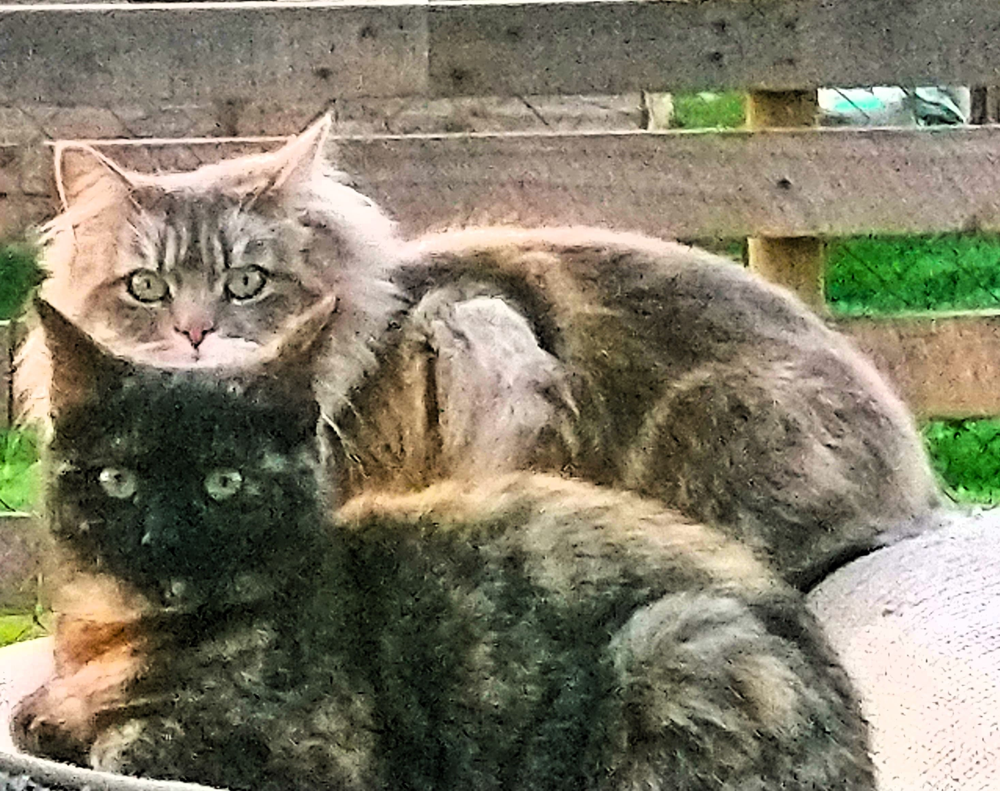
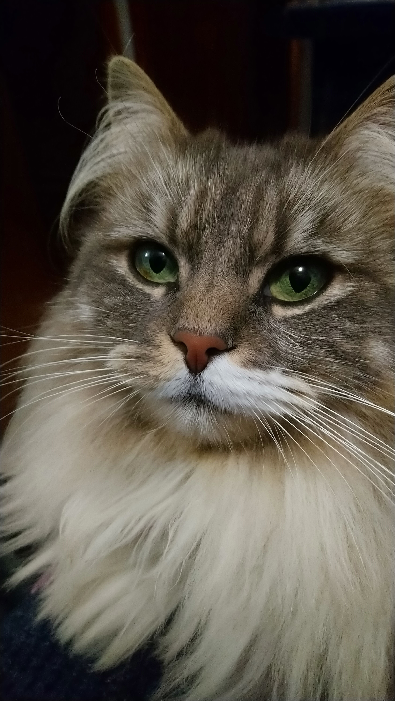
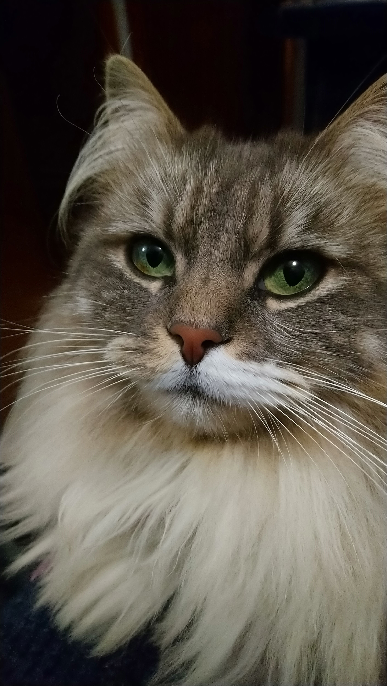
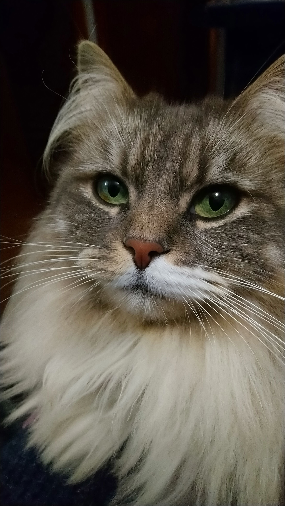
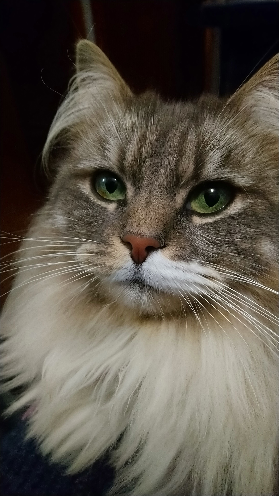
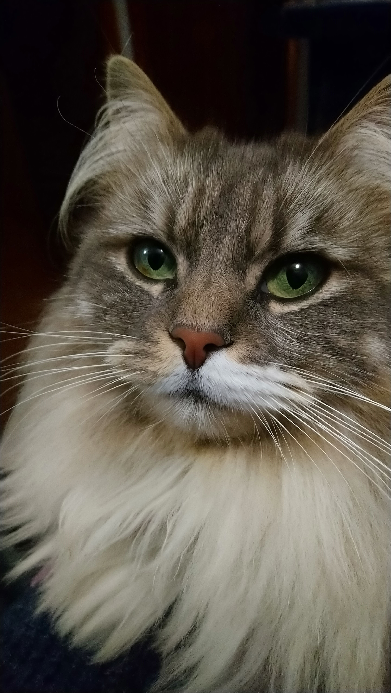

Gatos y Plantas
¡Captando Momentos Purrrrfectos!
Inicio
Gatos
Plantas
Consejos
Galeria
Fotos de mis gatos
 

Puedes presumir a tus mascotas aqui!! (no sirve)
Nombre
¿Cuantos colores tiene tu mascota?
1
2
3
4
¿Cual es la raza de tu mascota?
Presumir aqui
Enviar
Hasta Arriba
Volver
Inicio

 


